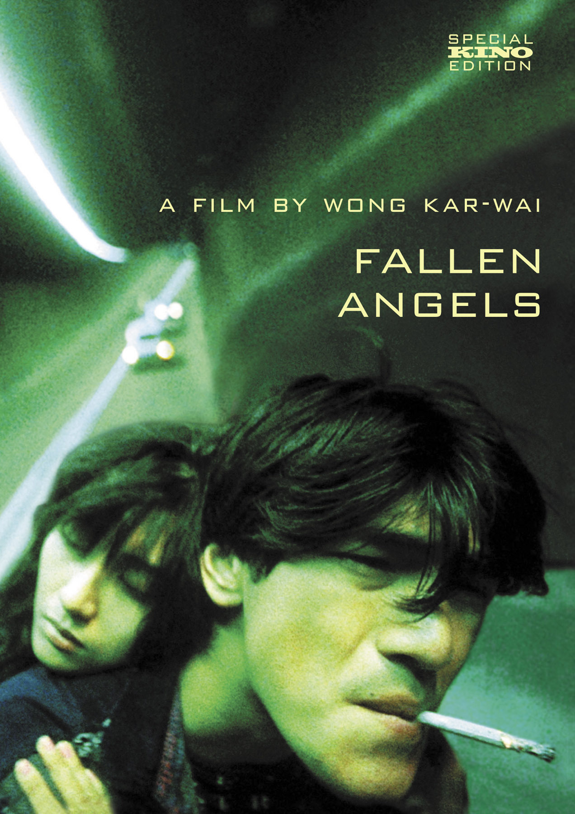

Wong’s family emigrated from Shanghai to Hong kong in 1963. For many Shanghainese, assimilation of Hong Kong’s different dialect and culture was difficult. Wong’s early experiences left a lasting impression, and three of his feature films are set in the 1960s.
Wong studied graphic design at Hong Kong Polytechnic (later Hong Kong Polytechnic University). He entered a course for prospective production designers and directors at the television network TVB, but he first worked as a screenwriter. Wong found a mentor in director Patrick Tam and contributed to the screenplay of Tam’s gangster drama Chuihau singlee (1987; Final Victory). In addition, Tam introduced the work of Argentine novelist Manuel Puig to Wong, who was particularly influenced by the fragmentary narrative of Heartbreak Tango (1969).
Wonggok ka moon (1988; As Tears Go By) was Wong’s first film as a director. A young man is torn between his love for his cousin and his friendship with his impetuous Triad “brother.” The film is Wong’s most conventional in terms of style and narrative but presents some features of his later work, such as his trademark form of pulsating slow motion and an expressive use of popular music.
A Fei jingjyuhn (1990; Days of being wild) was the first film in which Wong employed voice-overs by multiple characters and a complex, fragmented story structure—both signatures of his style. It was also his first film with two of his key collaborators, cinematographer Cristopher doyle and actor Tony Leun. Set in 1960 in Hong Kong, the film follows Yuddy, a feckless ladies’ man, as he rejects the love of two women, as well as his foster mother, to seek his birth mother. Time first emerges as a major theme in Wong’s work in Days of Being Wild, with many shots of clocks and watches. Because of the technical demands of shooting in a muted colour palette, production of the film took two years, a rarity in the fast-paced Hong Kong film industry. Although the film was a commercial flop, it was highly regarded by some international critics and won several film awards in Hong Kong. That pattern of domestic box-office indifference and international acclaim became consistent in Wong’s career.
Wong returned to screenwriting until he raised enough money to fund a film adaptation of popular novelist Jin Yong’s martial arts adventure Eagle-Shooting Heroes (1957). That film version, Dung che sai duk (1994; Ashes of time), took two years to make. (Wong preferred an improvisational style of filmmaking, without a finished script, that often led to long shoots.) Instead of adapting the novel, however, he borrowed three of its characters, for whom he created a prequel centred on the desert tavern of a swordsman and the lost souls who seek his services. With its disjointed narrative and its blurry, impressionistic action scenes, Ashes of Time divided critics and audiences—some of whom saw the film as a startling reimagination of the martial arts adventure, while others dismissed it as a pretentious repudiation of the genre.
During a two-month break in Ashes of Time’s production, Wong shot Chunghing Samlam (1994; Chunking express), which presents a pair of unrelated stories of unrequited love and missed romantic connections involving two policemen. Wong’s synthesis of the freedom of the French New Wave, the vigour of Hong Kong genre cinema, and the modernity of music videos brought him international acclaim.
Wong’s next film, Dohlok tinsi (1995; Fallen Angels), is also structured as two stories. In the first, a dispatcher for the Triad loves the hit man she employs but almost never meets. In the second, a mute man falls for a woman obsessed with her ex-boyfriend. Fallen Angels, with its many wide-angle shots and jump cuts, is the most stylized of Wong’s films.
Chungwong chasit (1997; Happy Together) was filmed in Buenos Aires and was initially conceived as an adaptation of Manuel Puig’s detective novel The Buenos Aires Affair (1973). Happy Together chronicles the disintegrating love affair between two Hong Kong expatriates. Wong’s work on the film won him the award for best director at the 1997 Cannes film festival.
He returned to 1960s Hong Kong for Fayeung ninwa (2000; In the Mood for Love), which concerns the growing attachment between Chow Mo-Wan (Leung) and Su Lizhen (Maggie Cheung), a man and a woman whose spouses are having an affair. The film’s lush score and detailed recreations of 1960s fashions and interiors, as well as the restrained yet emotional performances of Cheung and Leung, won it the instant acclaim of many as one of the cinema’s great love stories.
In Wong’s next film, 2046 (2004), a sequel to In the Mood for Love, Chow tries to forget his love for Su by engaging in a string of short affairs. The title refers to both the science-fiction novel Chow is writing (some of which is depicted in the movie) and to the final year of Hong Kong’s autonomy as a special administrative region of China. The film is filled with allusions to many of Wong’s earlier films, making it something of a summation of his career.
My Blueberry Nights (2007), a road movie filmed in the United States and starring singer Norah Jones, was a rare critical and commercial disappointment for Wong. In 2008 he released Ashes of Time Redux, a restored, shortened version with a new score. He returned to the martial-arts genre with Yutdoi jungsi (2013; The Grandmaster), a biography of martial artist Yip Man (Leung), who was best known as the trainer of Bruce Lee. Wong wrote the screenplay for and produced the romantic comedy Bai du ren (2016; “See You Tomorrow”). It was directed by Zhang Jiajia, who wrote the story on which it was based. Though it starred Leung and had many of the hallmarks of Wong’s movies, it was undermined by an unevenness of tone.